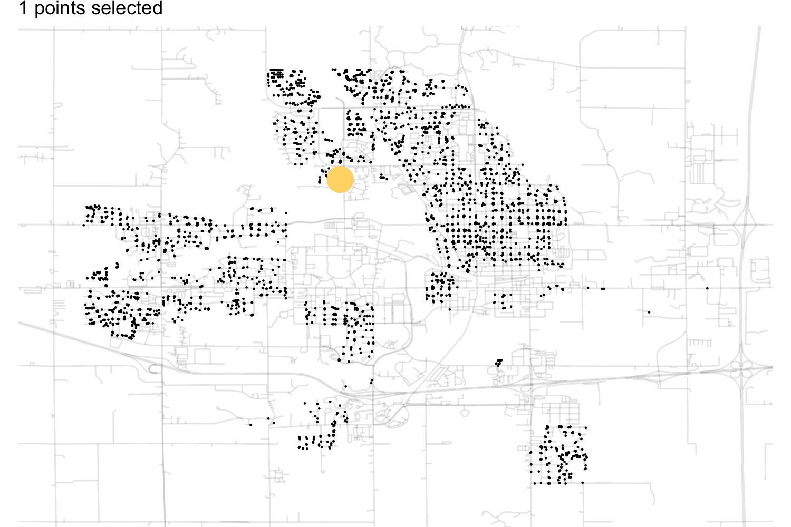

| Column | Min | Median | Max | Std. Dev. | Skewness | Distribution |
|---|---|---|---|---|---|---|
| Baths | 0.0 | 2.0 | 5.0 | 0.64 | 0.3 | ![]() |
| Gross Living Area | 334.0 | 1,442.0 | 5,642.0 | 505.51 | 1.3 | ![]() |
| Latitude | 42.0 | 42.0 | 42.1 | 0.02 | -0.5 | ![]() |
| Longitude | -93.7 | -93.6 | -93.6 | 0.03 | -0.3 | ![]() |
| Lot Area | 1,300.0 | 9,436.5 | 215,245.0 | 7,880.02 | 12.8 | ![]() |
| Sale Price | 12,789.0 | 160,000.0 | 755,000.0 | 79,886.69 | 1.7 | ![]() |
| Year Built | 1,872.0 | 1,973.0 | 2,010.0 | 30.25 | -0.6 | ![]() |
| Year Sold | 2,006.0 | 2,008.0 | 2,010.0 | 1.32 | 0.1 | ![]() |
3 Initial Data Splitting
In the previous chapter, Figures 2.10 and 2.11 described various operations for the development and evaluation of ML models. We’ve also emphasized that “the right data should be used at the right time.” If the same samples were used for many different purposes, we run the risk of overfitting. Illustrated in ?sec-overfitting, this occurs when the model over-interprets irreproducible patterns in the modeling data that don’t happen in any other data set. As a result, the model performance statistics are likely to be very optimistic and give us a false sense of how well the model works. If the model were evaluated on a separate set of data (that does not have abnormal patterns), performance would look considerably worse. Because of potential overfitting, the modeler must decide how to best utilize their data across different operations.
This chapter will examine how we can appropriately utilize our data. Except in Section 3.7, we’ll assume that each data set row is statistically independent of the others. Before proceeding further, we’ll introduce an example data set used in multiple chapters.
3.1 The Ames Housing Data
These data, originally published by De Cock (2011), are an excellent teaching example. Data were collected for 2,930 houses in Ames, Iowa, via the local assessor’s office. A variety of different characteristics of the houses were measured. Chapter 4 of Kuhn and Silge (2022) contains a detailed examination of these data. For illustration, we will focus on a smaller set of predictors, summarized in Tables 3.1 and 3.2. The geographic locations of the properties are shown in Figure 3.2.
| Column | # Values | Most Frequent (n) | Least Frequent (n) | Distribution |
|---|---|---|---|---|
| Building Type | 5 | Single-Family Detached (2425) | Two-Family Conversion (62) | ![]() |
| Central Air | 2 | Yes (2734) | No (196) | ![]() |
| Neighborhood | 28 | North Ames (443) | Landmark (1) | ![]() |
As shown in Table 3.1, the sale price distribution is fairly right-skewed. For this reason, and because we do not want to be able to predict negative prices, the outcome is analyzed on the log (base-10) scale.
3.2 Training and Testing Sets
One of the first decisions is to decide which samples will be used to evaluate performance. We should evaluate the model with samples that were not used to build or fine-tune it. An “external sample” will help us obtain an unbiased sense of model effectiveness. A selection of samples can be set aside to evaluate the final model. The training data set is the general term for the samples used to create the model. The remaining samples, or a subset of them, are placed in the testing data set. The testing data set is exclusively used to quantify how well the model works on an independent set of data. It should only be accessed once to validate the final model candidate.
How much data should be allocated to the training and testing sets? This depends on several characteristics, such as the total number of samples, the distribution of the response, and the type of model to be built. For example, suppose the outcome is binary and one class has far fewer samples than the other. In that case, the number of samples selected for training will depend on the number of samples in the minority class. Finally, the more tuning parameters required for a model, the larger the training set sample size will need to be. In general, a decent rule of thumb is that 75% could be used from training.
When the initial data pool is small, a strong case can be made that a test set should be avoided because every sample may be needed for model building. Additionally, the size of the test set may not have sufficient power or precision to make reasonable judgments. Several researchers (J. Martin and Hirschberg 1996; Hawkins, Basak, and Mills 2003; Molinaro 2005) show that validation using a single test set can be a poor choice. Hawkins, Basak, and Mills (2003) concisely summarizes this point:
“hold-out samples of tolerable size […] do not match the cross-validation itself for reliability in assessing model fit and are hard to motivate”.
Resampling methods (?sec-resampling), such as cross-validation, are an effective tool that indicates if overfitting is occurring. Although resampling techniques can be misapplied, such as the example shown in Ambroise and McLachlan (2002), they often produce performance estimates superior to a single test set because they evaluate many alternate versions of the data.
Overfitting is the greatest danger in predictive modeling. It can occur subtly and silently. You cannot be too paranoid about overfitting.
For this reason, it is crucial to have a systematic plan for using the data during modeling and ensure that everyone sticks to the program. This can be particularly important in cases where the modeling efforts are collaborations between multiple people or institutions. We have had experiences where a well-meaning person included the test set during model training and showed stakeholders artificially good results. For these situations, it might be a good idea to have a third party split the data and blind the outcomes of the test set. In this way, we minimize the possibility of accidentally using the test set (or people peeking at the test set results).
3.3 Information Leakage
Information leakage (a.k.a data leakage) is another aspect of data handling to consider at the onset of a modeling project. This occurs when the model has access to data that it should not. For example,
- Using the distribution of the predictor data in the test set (or other future data) to inform the model.
- Including identical or statistically related data in training and test sets.
- Exploiting inadvertent features that are situationally confounded with the outcome.
An example of the last item we experienced may be familiar to some readers. A laboratory was producing experimental results to evaluate the difference between two treatments for a particular disorder. The laboratory was under time constraints due to an impending move to another building. They prioritized samples corresponding to the new treatment since these were more interesting. Once finished, they moved to their new home and processed the samples from the standard treatment.
Once the data were examined, there was an enormous difference between the two treatment sets. Fortuitously, one sample was processed twice: before and after they moved. The two replicate data points for this biological sample also showed a large difference. This means that the signal seen in the data was potentially driven by the changes incurred by the laboratory move and not due to the treatment type.
This type of issue can frequently occur. See, for example, Baggerly, Morris, and Coombes (2004), Kaufman et al. (2012), or Kapoor and Narayanan (2023).
Another example occurs in the Ames housing data set. These data were produced by the local assessor’s office, whose job is to appraise the house and estimate the property’s value. The data set contains several quality fields for things like the heating system, kitchen, fireplace, garage, and so on. These are subjective results based on the assessor’s experience. These variables are in a qualitative, ordinal format: “poor”, “fair”, “good”, etc. While these variables correlate well with the sale price, they are actually outcomes and not predictors. For this reason, it is inappropriate to use them as independent variables.
Finally, the test set must emulate the data that will be seen “in the wild”, i.e., in future samples. We have had experiences where the person in charge of the initial data split had a strong interest in putting the “most difficult” samples in the test set. The prevalence of such samples should be consistent with their prevalence in the population that the model is predicting.
3.4 Simple Data Splitting
When splitting the data, it is vital to think about the model’s purpose and how the predictions will be used. The most important issue is whether the model will predict the same population found in the current data collection. For example, for the Ames data, the purpose is to predict new houses in the town. This definition implies a measure of interpolation since we are primarily concerned with what is happening in Ames. The existing data capture the types of properties that might be seen in the future.
As a counter-example, Chapter 4 of Kuhn and Johnson (2019) highlights a prediction problem in which a model is used to predict the future ridership of commuters on the Chicago elevated trains. This data set has daily records of how many commuters ride the train, and temporal factors highly affect the patterns. In this case, the population we will predict is future ridership. Given the heavy influence of time on the outcome, this implies that we will be extrapolating outside the range of existing data.
In cases of temporal extrapolation, the most common approach to creating the training and testing set is to keep the most recent data in the test set. In general, it is crucial to have the data used to evaluate the model be as close to the population to be predicted. For times series data, a deterministic split is best for partitioning the data.
When interpolation is the focus, the simplest way to split the data into a training and test set is to take a simple random sample. If we desire the test set to contain 25% of the data, we randomly generate an appropriately sized selection of row numbers to allocate sales to the test set. The remainder is placed in the training set.
What is the appropriate percentage? Like many other problems, this depends on the characteristics of the data (e.g., size) and the modeling context. Our general rule of thumb is that one-fourth of the data can go into testing. The criticality of this choice is driven by how much data is available. The split size is not terribly important if a massive amount of data is available. When data are limited, deciding how much data to withhold from training can be challenging.
T. Martin et al. (2012) compares different methods of splitting data, including random sampling, dissimilarity sampling, and other methods.
3.5 Using the Outcome
Simple random sampling does not control for any data attributes, such as the percentage of data in the classes. When one class has a disproportionately small frequency compared to the others (discussed in ?sec-imbalances), the distribution of the outcomes may be substantially different between the training and test sets.
When splitting the data, stratified random sampling (Kohavi 1995) applies random sampling within sub-groups (such as the classes) to account for the outcome. In this way, there is a higher likelihood that the outcome distributions will match. When an outcome is a number, we use a similar strategy; the numeric values are broken into similar groups (e.g., low, medium, and high) and execute the randomization within these groups.
Let’s use the Ames data to demonstrate stratification. The outcome is the sale price of a house. Figure 3.1(a) shows the distribution of the outcomes with vertical lines that separate 20% partitions of the data. Panel (b) shows that the outcome distributions are nearly identical after partitioning into training and testing sets.

3.6 Using the Predictors
Alternatively, we can split the data based on the predictor values. Willett (1999) and Clark (1997) proposed data splitting based on maximum dissimilarity sampling. The dissimilarity between two samples can be measured in several ways. The simplest method uses the distance between the predictor values for two samples. If the distance is small, the points are nearby. Larger distances between points are indicative of dissimilarity. To use dissimilarity as a tool for data splitting, we should initialize the training set with a single sample. We calculate the dissimilarity between this initial sample and the unallocated samples. The unallocated sample that is most dissimilar is added to the training set. A method is needed to allocate more instances to the training set to determine the dissimilarities between groups of points (i.e., the two in the training set and the unallocated points). One approach is to use the average or minimum of the dissimilarities. For example, to measure the dissimilarities between the two samples in the training set and a single unallocated point, we can determine the two dissimilarities and average them. The third point added to the training is chosen as having the maximum average dissimilarity to the existing set. This process continues until we achieve the targeted training set size.
Figure 3.2 illustrates this process for the Ames housing data. Starting with a data point near the middle of the town, dissimilarity sampling selected 25 data points using scaled longitude and latitude as predictors. As the sampling proceeds, the algorithm initially chooses samples near the outskirts of the data, especially if they are outliers. Overall, the selected data points cover the space with no redundancy.

For this example, the two predictors used for splitting were numeric. In this case, we typically use simple distance functions to define dissimilarity. Many other functions are possible. The Gower distance (Gower 1971) is a good alternative when a data set has non-numeric predictors. ?sec-cls-knn discusses this metric in more detail.
While this analysis nicely illustrates the dissimilarity sampling process, it is flawed since it ignores the issue of spatial autocorrelation (Mahoney et al. 2023). This is the idea that things close to one another act more similarly than objects farther away. ?sec-spatial-resampling discusses this data-splitting issue in more detail.
There are various other methods to split the data using the predictor set. For example, Kennard and Stone (1969) describes an algorithm that attempts to sequentially select points to be uniformly distributed in the space defined by the splitting variables. Similarly, Vakayil and Joseph (2022) proposed a data splitting method called twinning, where a split of the data is sought that minimizes an aggregate distance between points in the training and testing set. Twinning uses the energy distance of Székely and Rizzo (2013), which measures the equality of distributions, to make the two data sets similar. Any variables can be used in the distance calculations.
3.7 Multi-Level Data
There are cases where the rows of a data set may not be statistically independent. This often occurs when multiple data points are collected on individual people, such as
- Patients in medical studies may have data collected over time.
- Purchase histories of individual customers in a retail database.
In these and other situations, the data within a person tend to be correlated. This means that the data from a specific person have a higher correlation than data between people. There are many names for this type of data: multi-level data, hierarchical data, longitudinal data, random effect data, profile data, functional data, and so on. In some cases, there are multiple layers of data hierarchies.
Note that the variable that indicates the person is generally not a predictor; we would not be making predictions about individual people. People, in this example, are sampled from the broader population. In this case, we are more concerned with the population rather than the individuals sampled from that population.
This aspect of the data differentiates it from the neighborhood predictor in the Ames data. The houses within each neighborhood may be more similar to one another than houses between neighborhoods. However, the difference is that we want to make predictions using information from these specific neighborhoods. Therefore, we will include neighborhood as a predictor since the individual neighborhoods are not a selected subset of those in the town; instead, the data contain all of the neighborhoods currently in the city.1
Chapter 9 of Kuhn and Johnson (2019) has a broad discussion on this topic with an illustrative example.
When splitting multi-level data into a training and test set, the data are split at the subject level (as opposed to the row level). Each subject would have multiple rows in the data, and all of the subject’s rows must be allocated to either the training or the test set. In essence, we conduct random sampling on the subject identifiers to partition the data, and all of their data are added to either the training or test set.
If stratification is required, the process becomes more complicated. Often, the outcome data can vary within a subject. To stratify to balance the outcome distribution, we need a way to quantify the outcome per subject. For regression models, the mean of each subject’s outcome might be an excellent choice to summarize them. Analogously, the mode of categorical outcomes may suffice as an input into the stratification procedure.
3.8 Validation Sets
As previously discussed, validation sets are a separate partition of the data that function as a precursor for the testing set. It allows us to obtain performance estimates on our model(s) during the development cycle. These are commonly used in deep learning and other domains where the initial data sizes range from very large to massive. This additional partition is often created simultaneously with the training and testing sets.
Validation sets serve the same purpose as resampling methods described in ?sec-resampling and we can consider them single resamples of the training data. Methods like bootstrapping or cross-validation use many alternative versions of the training set to compute performance statistics. When our data are extensive, multiple resamples are computationally expensive without significantly improving the precision of our estimates.
Without loss of generalization, we will treat the validation set as a particular case of resampling where there is a single resample of the training set. This difference is not substantive and allows us to have a common framework for measuring model efficacy (before the testing set).
We’ll see validation sets discussed in ?sec-validation and used in Sections TODO and TODO.
Chapter References
Ambroise, C, and G McLachlan. 2002. “Selection Bias in Gene Extraction on the Basis of Microarray Gene-Expression Data.” Proceedings of the National Academy of Sciences 99 (10): 6562–66.
Baggerly, K, J Morris, and K Coombes. 2004. “Reproducibility of SELDI-TOF Protein Patterns in Serum: Comparing Datasets from Different Experiments.” Bioinformatics 20 (5): 777–85.
Clark, R. 1997. “OptiSim: An Extended Dissimilarity Delection Method for Finding Diverse Representative Subsets.” Journal of Chemical Information and Computer Sciences 37 (6): 1181–88.
De Cock, D. 2011. “Ames, Iowa: Alternative to the Boston Housing Data as an End of Semester Regression Project.” Journal of Statistics Education 19 (3).
Gower, J. 1971. “A General Coefficient of Similarity and Some of Its Properties.” Biometrics 27 (4): 857–71.
Hawkins, D, S Basak, and D Mills. 2003. “Assessing Model Fit by Cross-Validation.” Journal of Chemical Information and Computer Sciences 43 (2): 579–86.
Kapoor, S, and A Narayanan. 2023. “Leakage and the Reproducibility Crisis in Machine-Learning-Based Science.” Patterns 4 (9).
Kaufman, S, S Rosset, C Perlich, and O Stitelman. 2012. “Leakage in Data Mining: Formulation, Detection, and Avoidance.” ACM Transactions on Knowledge Discovery from Data 6 (4): 1–21.
Kennard, R W, and L A Stone. 1969. “Computer Aided Design of Experiments.” Technometrics 11 (1): 137–48.
Kohavi, R. 1995. “A Study of Cross-Validation and Bootstrap for Accuracy Estimation and Model Selection.” International Joint Conference on Artificial Intelligence 14: 1137–45.
Kuhn, M, and K Johnson. 2019. Feature Engineering and Selection: A Practical Approach for Predictive Models. CRC Press.
Kuhn, M, and J Silge. 2022. Tidy Modeling with R. O’Reilly Media, Inc.
Mahoney, M J, L K Johnson, J Silge, H Frick, M Kuhn, and C M Beier. 2023. “Assessing the Performance of Spatial Cross-Validation Approaches for Models of Spatially Structured Data.” arXiv.
Martin, J, and D Hirschberg. 1996. “Small Sample Statistics for Classification Error Rates I: Error Rate Measurements.” Department of Informatics and Computer Science Technical Report.
Martin, T, P Harten, D Young, E Muratov, A Golbraikh, H Zhu, and A Tropsha. 2012. “Does Rational Selection of Training and Test Sets Improve the Outcome of QSAR Modeling?” Journal of Chemical Information and Modeling 52 (10): 2570–78.
Molinaro, A. 2005. “Prediction Error Estimation: A Comparison of Resampling Methods.” Bioinformatics 21 (15): 3301–7.
Székely, G J, and M L Rizzo. 2013. “Energy Statistics: A Class of Statistics Based on Distances.” Journal of Statistical Planning and Inference 143 (8): 1249–72.
Vakayil, A, and V R Joseph. 2022. “Data Twinning.” Statistical Analysis and Data Mining: The ASA Data Science Journal 15 (5): 598–610.
Willett, P. 1999. “Dissimilarity-Based Algorithms for Selecting Structurally Diverse Sets of Compounds.” Journal of Computational Biology 6 (3): 447–57.
If you are familiar with non-Bayesian approaches to multi-level data, such as mixed effects models, this is the same as the difference between random and fixed effects. ↩︎